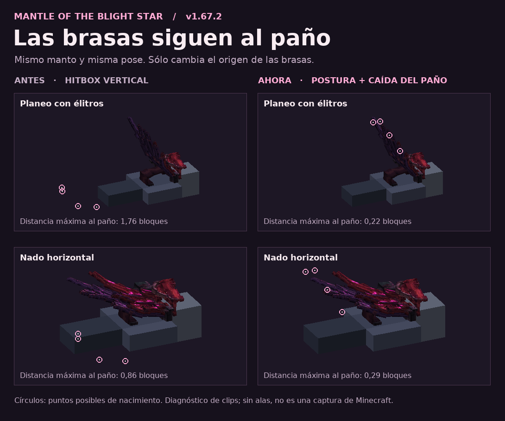

v1.67.2 · Planeo y nado
Mantle of the Blight Star
Las brasas nacen junto a los jirones al planear y nadar. El paño conserva su halo rosa y violeta, con el cuello, el forro y las placas de carbón mates. Para Forge 1.20.1 con GeckoLib 4.8.1.

Ver el dorso junto a la referencia original
Los modelos se muestran con un portador neutro. El pelo y la ropa de la referencia no forman parte de la capa. No son capturas in-game.